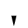

Left click/drag to move tiles; right click/drag to rotate.
Click and drag a line across tiles to cut them, or hold CTRL to select multiple tiles.
Right click an empty area and click Save As to save your work as an image.
Click/drag the toolbar border to move it.
Click and Drag to change tile size.
Click and Drag for a new random tile. Drill down for regular shapes.
Click to activate Custom Shape mode.
Click to open the colour palette.
Click to activate the colour dropper; left click a tile to update its colour, and right click to copy its colour.
Drag tiles here to copy them (shortcut: ctrl + c). Drill down to show/hide the contents.
Click to load your own images as tiles. Drill down to see what has been loaded.
Click to flip vertically. (shortcut: ctrl + v)
Click to flip horizontally. (shortcut: ctrl + h)
Click to undo. (shortcut: ctrl + z)
Click to redo. (shortcut: ctrl + y)
Drag tiles here to trash them. (shortcut: Delete key)
Click to show/hide File menu.
Show/hide this dialog.